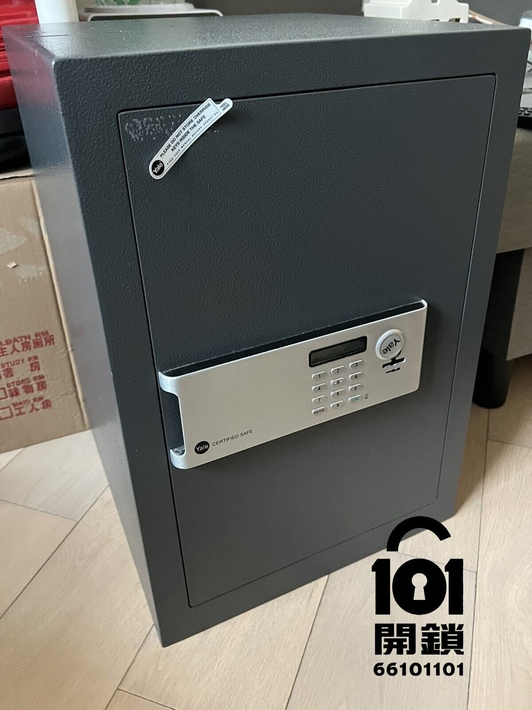
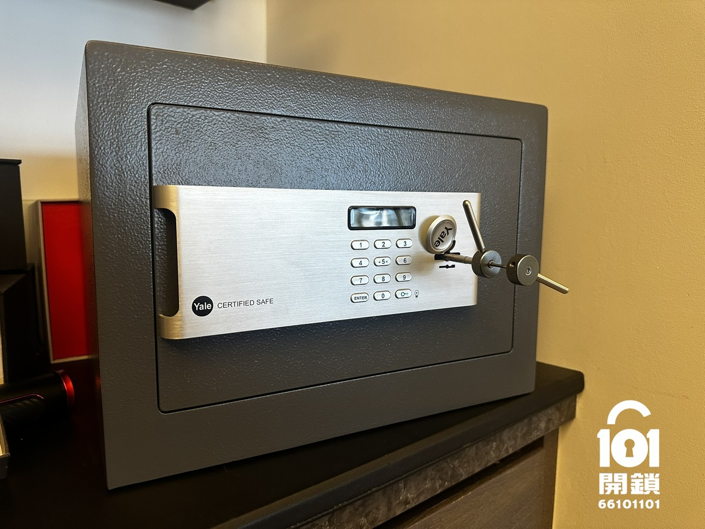
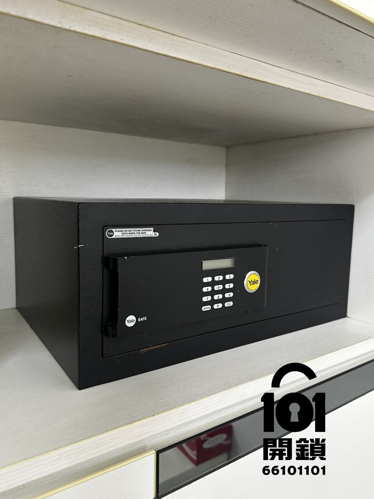
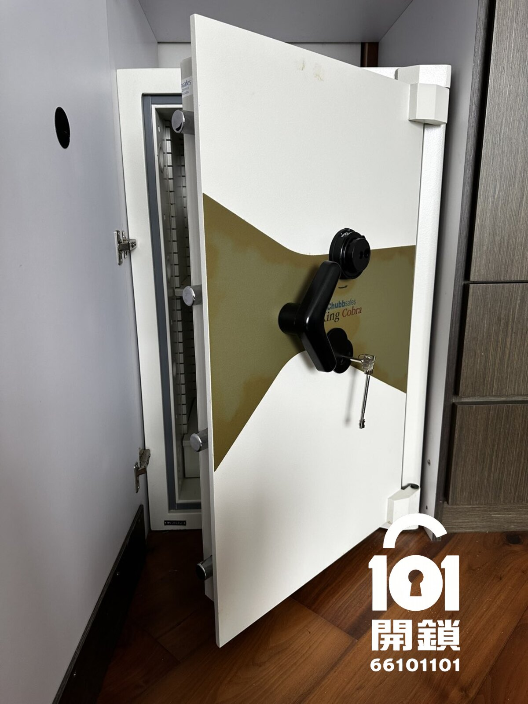
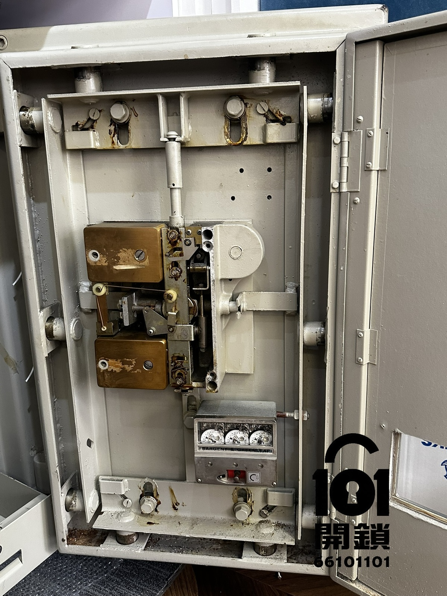
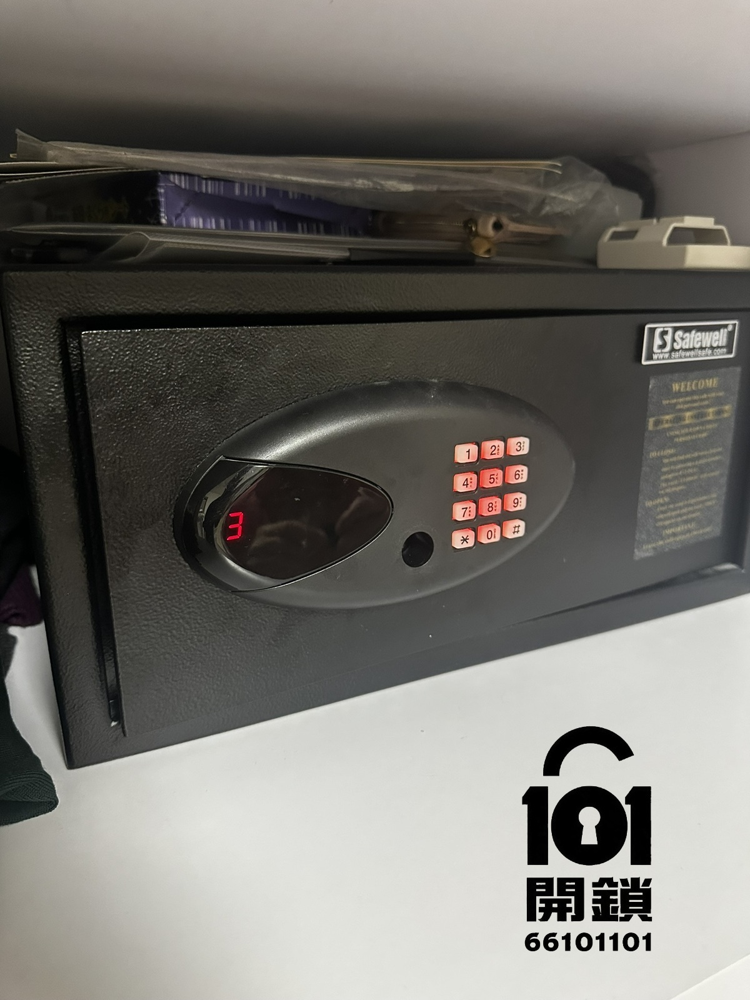
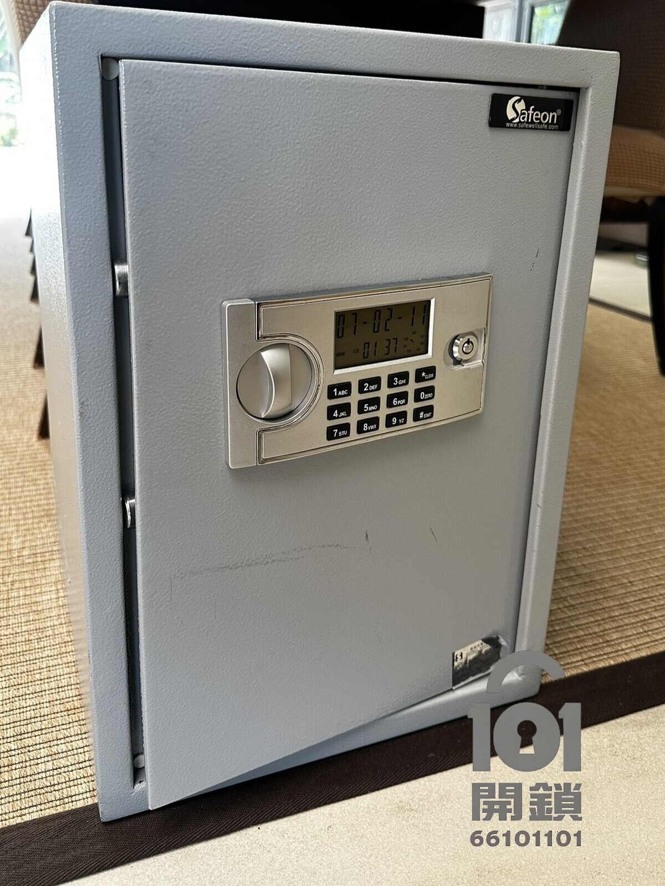
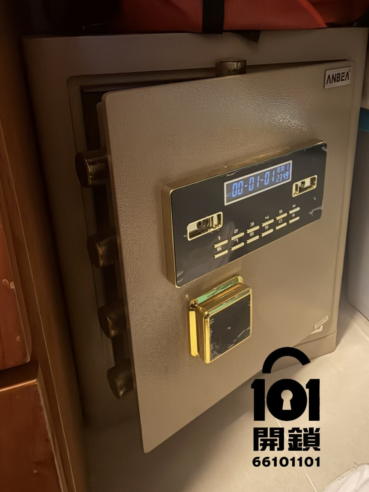

忘記夾萬密碼
先確認是否有管理密碼、後備鎖匙、購買單據或原廠重設程序，再評估夾萬密碼重設方法。
先確認是否有管理密碼、後備鎖匙、購買單據或原廠重設程序，再評估夾萬密碼重設方法。
可能是電池耗盡、接點氧化、面板或內部線路問題，應先按電子夾萬型號檢查外部供電方式。
在正確密碼下仍無法轉動，可能涉及門壓、鎖栓受力或保險箱內部傳動故障。
以下是我們接觸過的 Yale耶魯、Chubb集寶、Safewell盛威、Safeon及Anbea安普夾萬。不同品牌的電子密碼鎖、鎖匙式保險箱及機械鎖結構各有不同，查詢香港夾萬開鎖或維修時，請先提供正面及整體相片。








任何需要鑽孔或破壞性處理的夾萬開鎖方案，都應在動工前說明位置、影響、修復可能性及費用。
不一定。部分型號只有在門已開啟時才能重設；其他型號可能需要原廠程序或管理權限。
部分電子夾萬設外置電池盒、接點或後備匙，但方法因品牌及型號而異，應按說明書或原廠指引操作。
視乎故障原因和處理方法。若零件損壞或必須破壞性開啟，可能需要維修或更換鎖件。